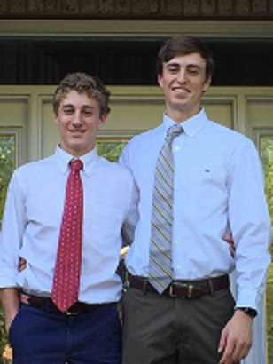
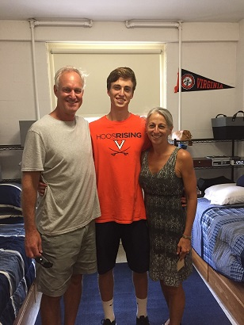

My name is Connor Yager, and I am the creator and upkeeper of this blog. I am a third year student at the University of Virginia, and am majoring in computer science in the School of Engineering and Applied Sciences. On this page I will post information relavent to me and the things that I have done in my life. This is meant to be a sort of living resume, and a way for viewers of my site to get to know me a little bit.
With that, I invite you to continue reading if you would like to get to know me better, and to explore the rest of the site!
-Connor
To contact me, use any of the methods listed below:
| Phone | (703) 336-3822 |
| Mailing Address | 1520 Mirassou Lane Virginia Beach, VA 23454 |
| csy7ay@virginia.edu | |
| @connor_yager |
Currently, I am a third year student at the University of Virginia's School of Engineering and Applied Sciences. I attended Norfolk Academy in Norfolk, VA for my sophomore, junior, and senior years, where I graduated with high honors. I spent my freshman year at W.T. Woodson High School in Fairfax, VA.
While not at school I live with my parents, Kim and Craig Yager, and my younger brother Chase. Both of my parents were pilots in the United States Navy, where my dad retired at the rank of Captain and my mom acheived the rank of Lieutenant Commander. Prior to her time in the military, my mom majored in graphic design at Auburn University, and worked as a graphic designer for several years. My dad earned a pre-law bachelor's degree at the University of California at Santa Barbara, and while serving in the military earned an M.B.A. at National University. Following their time in the Navy, my mother worked as a commercial airline pilot for Delta Airlines, and my father worked for a company based in Virginia Beach, VA, called Check-6, which specifically hires former aviators to teach safety management to oil rig workers. Currently, my dad works at the corporate level at 7-Eleven.
My brother is currently a junior at Norfolk Academy, and is an exemplary student and athlete. While his grades are stellar in all subjects, he is particularly inclined towards the sciences and mathematics. Chase has been a varsity athlete since his freshman year, and currently plays for three varsity teams in soccer, basketball, and lacrosse. Chase aspires to play lacrosse at the collegiate level.

Me and my brother, Chase.

Me with my dad, Craig, and my mom, Kim.